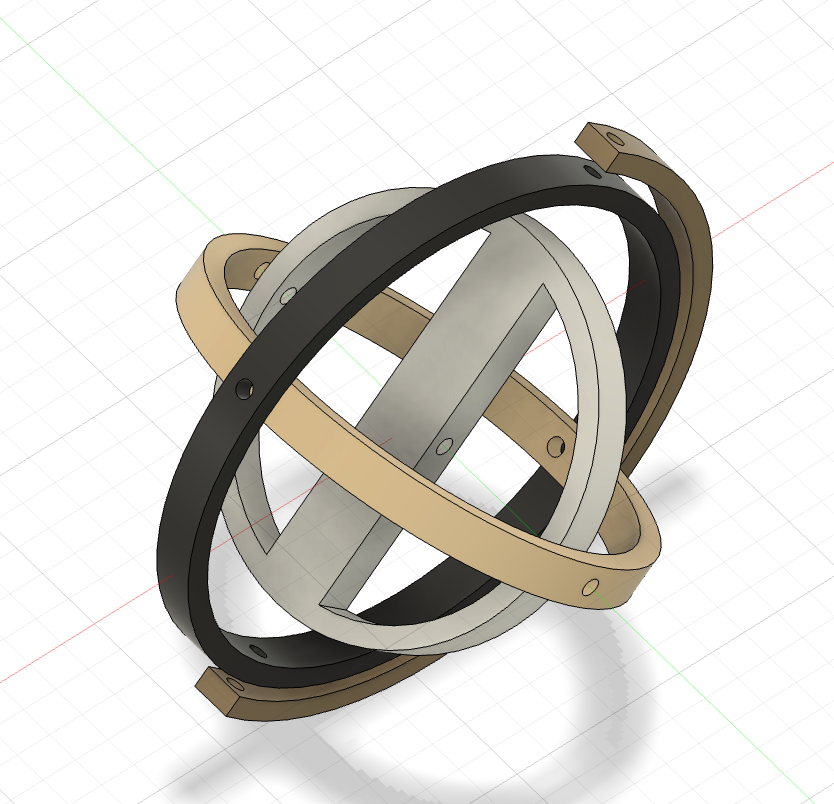

<div class="textcontainer">
<p class="margin"> </p>
<h3>Week 7: Electronic Outputs</h3>
<h4 align="center"><b>Final Project Minimum Viable Product</b></h4>
Inspiration: I wear a mechanical watch, and sometimes it runs out of juice when I don't wear it for a day or two. Oftentimes I check my watch and the
time is completely off because I forgot to wind it! To make sure I never have the wrong time again, an automatic watch winder would keep the watch in
constant motion to continuously wind it, even when I'm not wearing it.<p></p>
There are many ways to accomplish this task, but the coolest way (in my opinion) to do this is via a gyroscope mechanism. Here is the initial fusion
design:
<div class="flexrow"></div>
<p></p>
The idea here is that the watch sits in the middle of the central frame, wrapped around the central wood support. Surrounding the watch are 4 frames
that all rotate on different axes, and the outmost frame is fixed to the base of the structure. To create the whole structure, I laser cut each part twice
and glued them together for a combined thickness of 12mm---this way, there would be enough room for axle holes to be drilled into the sides of each frame.
<div class="flexrow"><img src="frames.png" alt="frames" style="width:30%" border="3px"></div><p></p>
One challenge I faced was finding the right material for the gimbals, which are the axles that each frame turns on. I eventually settled on using wooden pegs
and plastic washers as spacers, which turned out to work surprisingly well.
<div class="flexrow"><img src="dowels.png" alt="frames" style="width:30%" border="3px"></div><p></p>
Making the stand was simple and just involved cutting a supporting structure for the outermost frame. I anticipate future models might require a bigger
base in order to house the motor and circuitboard. For now, I'll just make it work the old-fashioned way---with my hand.
<div class="flexrow"><img src="base.png" alt="frames" style="width:30%" border="3px"></div><p></p>
After gluing all the piecees together, drilling the holes proved harder than expected. Positioning was everything, and I had to mark every hole with
a sharpie after centering and lining up the angles of each frame. Then, I glued pegs into the frames, making sure each gap in between the frames was
fitted with 3 plastic washers each. This configuration allowed the frames to spin with less friction, while also keeping the frames in place.<p></p>
Finally, I simulated the watch weight by taping screws to the interior bridge on the smallest frame. Here is the final result:
<video width="600" controls muted autoplay style="display: block; margin: auto;">
<source src="MVP_demo.mp4" type="video/mp4">
MVP Demo
</video>
</div>